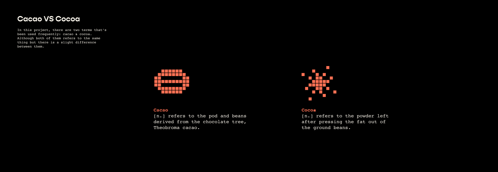
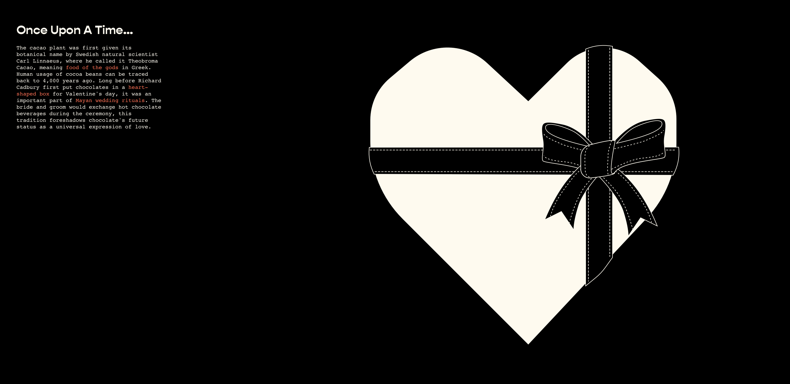
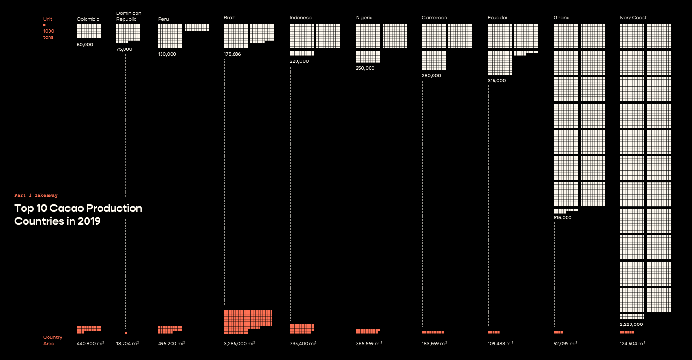

Homepage
Part 1 Cocoa Affection
100,000 tons
1000
tons
2.
From Beans to Bars
3.
As Cocoa Grow
4.
Behind the Barcode


Do you know which country produce the most cacao beans?
(Hint: hover over country's name)

Homepage
So what does
8.8kg per capita
mean? How many cacao beans do we need to make one pound of chocolate?
Next